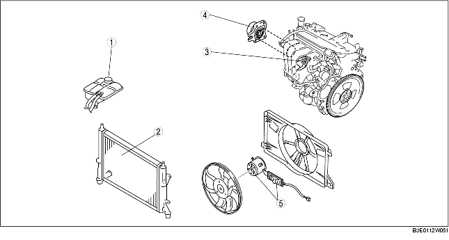

.
|
1
|
Capuchon de système de refroidissement
(voir la section INSPECTION DE CAPUCHON DE SYSTEME DE REFROIDISSEMENT.)
|
|
2
|
Radiateur
(voir la section DEPOSE/REPOSE DE RADIATEUR.)
|
|
3
|
Thermostat
(voir la section DEPOSE/REPOSE DE THERMOSTAT [ZJ, Z6].)
(voir la section INSPECTION DE THERMOSTAT [ZJ, Z6].)
|
|
4
|
Pompe à eau
(voir la section DEPOSE/REPOSE DE POMPE A EAU [ZJ, Z6].)
|
|
5
|
Composant de moteur de ventilateur de refroidissement
(voir la section INSPECTION DE COMPOSANT DE MOTEUR DE VENTILATEUR DE REFROIDISSEMENT.)
|